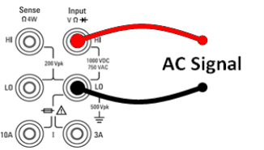
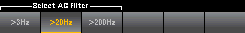

Frequency and Period
This section describes how to configure frequency and period measurements from the front panel.
Step 1: Configure the test leads as shown.

Step 2: Press [Freq] on the front panel and then use the first softkey to choose either frequency or period measurement.
Step 3: Press Range to select a range for the measurement. (Auto (autorange) automatically selects the range for the measurement based on the input. Autoranging is convenient, but it results in slower measurements than using a manual range. Autoranging goes up a range at 120% of the present range, and down a range below 10% of the present range.
Step 4: Press AC Filter and choose the filter for the measurement. The instrument uses three different AC filters that enable you either to optimize low frequency accuracy or to achieve faster AC settling times following a change in input signal amplitude.
The three filters are 3 Hz, 20 Hz, and 200 Hz, and you should generally select the highest frequency filter whose frequency is less than that of the signal you are measuring, because higher frequency filters result in faster measurements. For example, when measuring a signal between 20 and 200 Hz, use the 20 Hz filter.
If measurement speed is not an issue, choosing a lower frequency filter may result in quieter measurements, depending on the signal that you are measuring.

Step 5: Press Gate Time and choose the measurement aperture (integration time) of 1 ms (34465A/70A only) 10 ms, 100 ms (default), or 1 s.
Step 6: (34465A/70A only) Press Timeout to control how long the instrument waits before timing out on a frequency or period measurement when no signal is present. When set to 1s, the instrument waits 1 second before timing out. When set to Auto, the wait time varies with AC filter bandwidth; for the faster bandwidths, the instrument waits a shorter time before timing out and returning 0.0. This is advantageous in manufacturing test systems where a DUT failure may result in no signal; in this case, the failure can be detected sooner, speeding up test throughput.

|
For accurate displayed statistics of AC measurements in Front Panel mode, the default manual trigger delay ([Acquire] > Delay Man) must be used. |